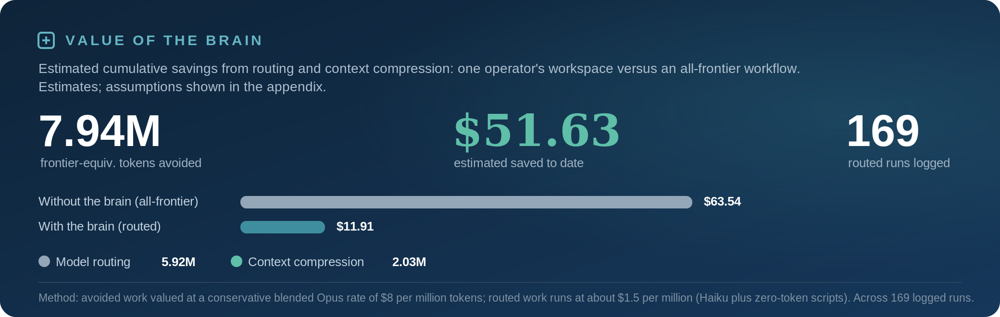
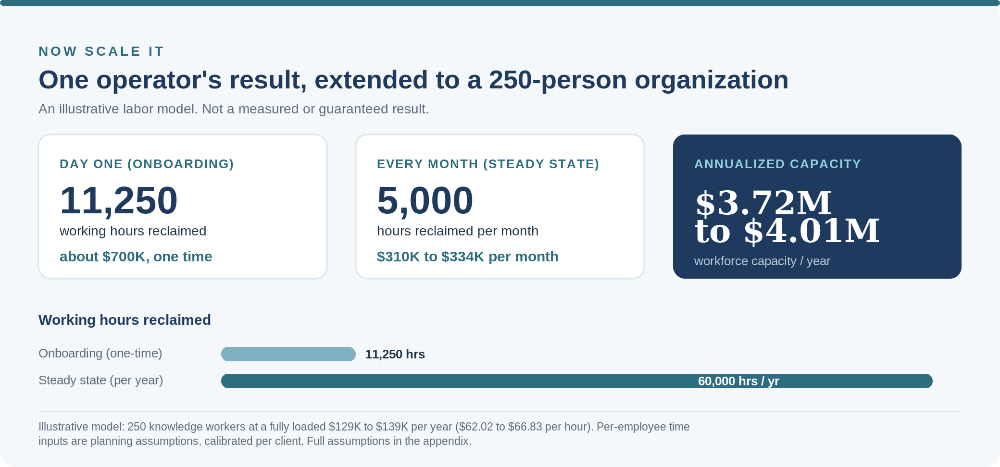

Most companies roll out AI the same way. Buy the licenses, open the chat box, and tell people to figure it out. The model works. The rollout stalls. And it stalls on the human interface, not the technology.
I saw this pattern up close at Capco, where I spent six and a half years on enterprise implementation for Fortune 500 oil, gas, and energy companies, the last three of them focused on GenAI. The projects that failed almost never failed on capability. They failed because the workforce was left to teach itself to prompt by trial and error. That is an expensive, invisible tax. It is paid in wasted tokens, in output that has to be rewritten by hand, and in the diverted attention of your best people.
What it is costing you
The learning-curve tax has three line items. Tokens burned on long, zero-shot loops that feed the same context back and forth. Output that has to be rewritten because no one framed the context up front. And skilled employees moonlighting as amateur prompt engineers instead of doing the job you hired them for. None of it is a model problem. All of it is a structure problem, and structure is fixable on day one.
What I did about it
I built a structured operating layer, a company brain, that sits between the person and the model, so the first prompt is already framed and pointed at the right output. The person does not learn to prompt. The structure does it for them. Then I ran my entire consulting business on it for a month to see what it would do. I will keep the build to myself. The results, I will show you.

For the last month I ran a full consulting operation on this layer as a single operator. Multiple clients, a live lead-generation pipeline, dozens of published websites, daily quality control, and reporting. My own instrumentation shows it avoided roughly 7.94 million frontier-model tokens over the month versus doing the same work unstructured, valued at a conservative blended rate.
Here is the honest part. The compute behind all of that work cost about twelve dollars for the month. Tokens are cheap. The savings are real, and they are also small in dollar terms, and that is exactly the point. The constraint on enterprise AI was never compute. It is human ramp time and reclaimed hours. One operator sustained the output of a small team, because the structure, not the person, carried the learning curve.
Now scale it

So what happens when you take that per-operator result and extend it across a real workforce? I built an illustrative model, with assumptions in full below, for a 250-person organization. Bypassing the trial-and-error ramp on day one reclaims on the order of 11,000 working hours in onboarding alone. At steady state, structured AI use gives back roughly 20 hours per employee each month. In fully loaded labor terms, that is a one-time onboarding recovery near 700,000 dollars and an ongoing capacity gain approaching 4 million dollars a year.
Treat those as a model, not a measurement. The hours-per-employee inputs should be calibrated against your own environment. But the direction is not in question, and the mechanism is the same one I have already run on my own business. Put the structure in first, and the learning curve stops being something you pay for.
BY THE NUMBERS
Measured (one operator, one month): about 7.94 million frontier-model tokens avoided running a full multi-client consulting business on the brain. Compute cost for the month: about 12 dollars. The point is not the compute. It is the ramp time and the reclaimed hours.
Projected (illustrative, 250-person org): about 11,250 onboarding hours reclaimed on day one (near 700,000 dollars, one time), and about 5,000 hours per month at steady state, approaching 3.72 to 4.01 million dollars in annualized workforce capacity.
Measured figure is an estimate from my own dashboard. Enterprise figures are a labor model with stated assumptions. Not a guaranteed result.
Why this is the whole game
Everyone has the same models. The organizations that win with AI will be the ones that stopped making their people absorb the learning curve by hand. The ones that built the operating layer underneath the AI before they scaled it. That is not a technology decision. It is an operating decision, and it is the one most companies are skipping.
Building that operating layer is the core of what Lawson Group does. If your teams are live on AI but the returns are leaking away in rewrites and ramp time, that is the tax, and removing it is the work. If that resonates, I would welcome the conversation.